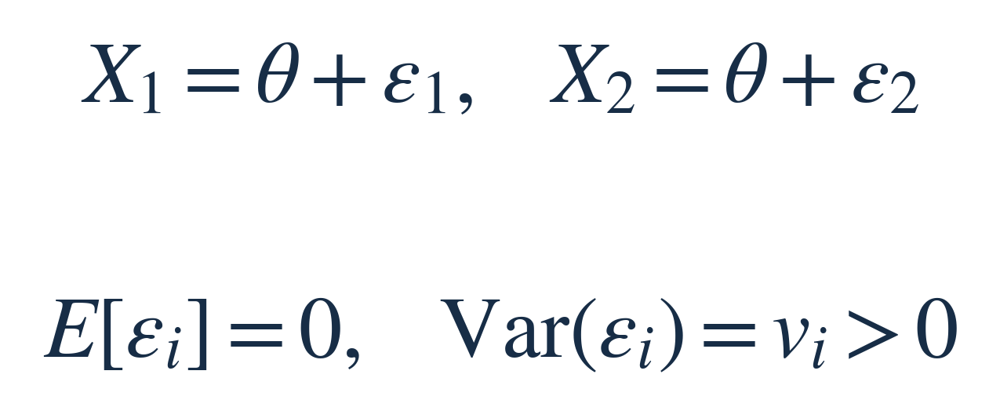
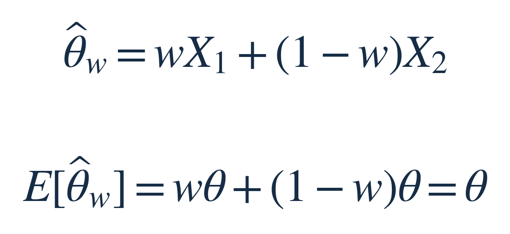
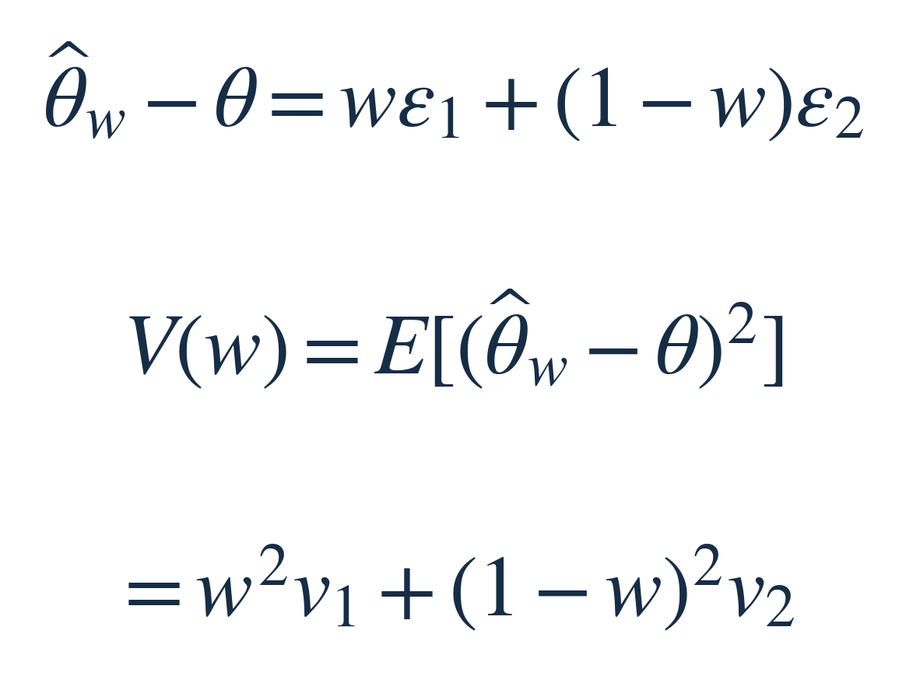
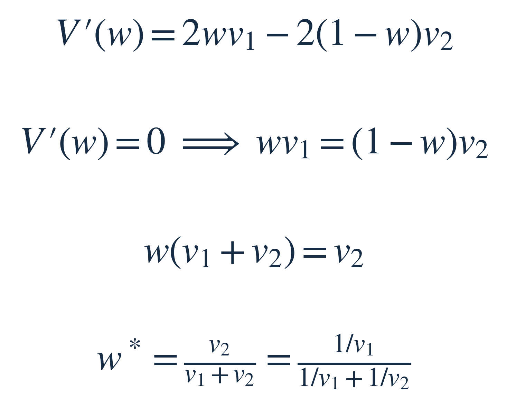
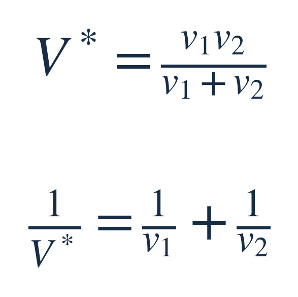
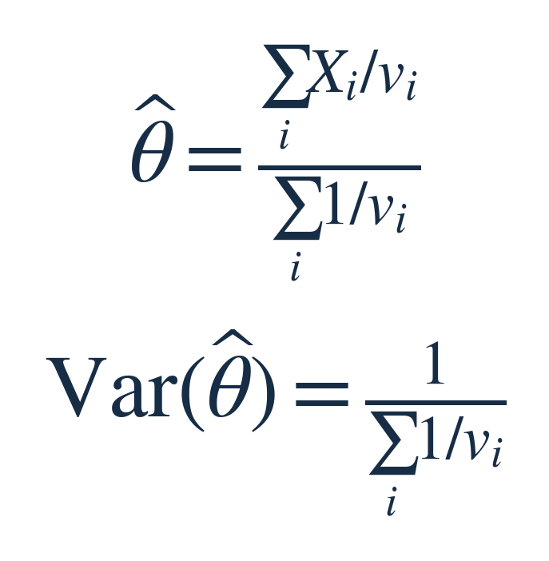
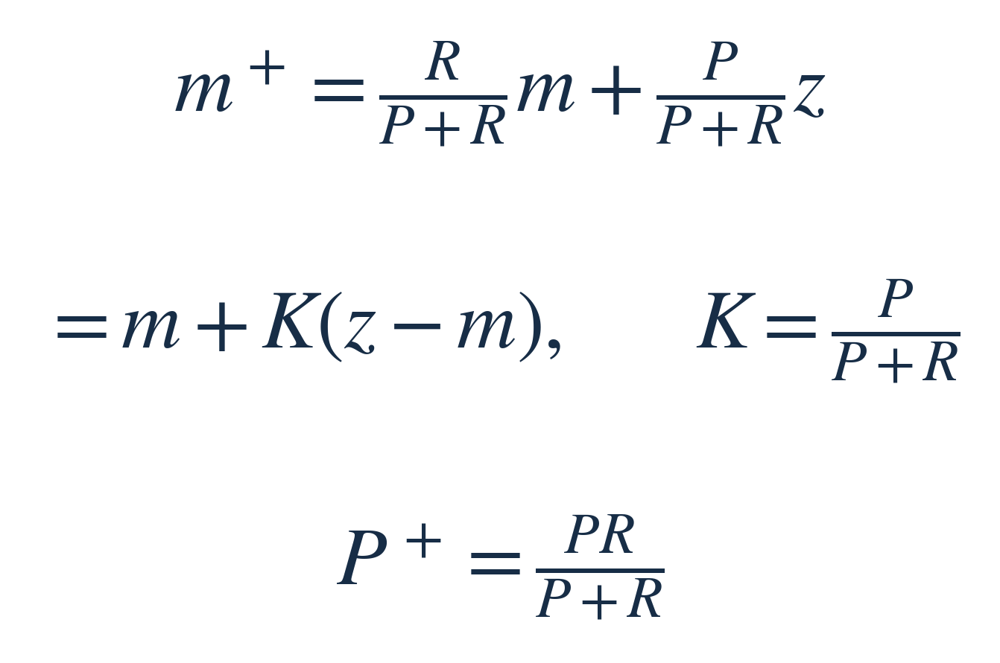

每周探索 · 数学共性小课 · 2026-10-09 · 主线约 7–8 分钟
合并独立估计，为什么按逆方差加权？
两支温度计同时测同一杯水，一支读数波动较小，另一支较大。若都没有系统性偏差，该怎样合并读数？本期从这一个问题推导权重，再看它怎样出现在研究结果合并和卡尔曼滤波中。
本期增量：此前 baseline 课调整单个梯度估计的噪声，Softmax 课分配选择概率；这里合并多个对同一真值的估计，推出逆方差权重。无需先读往期。
先说清：什么固定，什么可以选
把水温记作 θ，它是固定但未知的真值。X₁、X₂ 是重复测量时会变化的两路读数；ε₁、ε₂ 是对应误差。假设误差相互独立、长期平均为零，而且方差 v₁、v₂ 已知。方差描述读数围绕真值的波动，温度用 ℃，方差就用 ℃²。


我们只能选择第一路的权重 w，第二路随之为 1−w；先限制在 0 到 1。权重根据仪器误差模型预先确定，不看这一次读数来临时挑。要求两路权重相加为 1，是为了让没有偏差的读数合并后仍没有偏差：


希望改善的是重复测量时的平均平方误差：每次用合并读数减去真值、平方，再对测量噪声取平均。它惩罚估计离真值较远的情况。由于刚才保证了无偏，这个目标也就是合并估计的方差。并非每一次读数都一定更接近真值。
从误差写出目标，再解出权重
先把两路读数都换成“真值＋误差”。真值项因权重和为 1 而抵消，剩下的合并误差如下：


最后一行从哪来？平方展开后，有两项平方和一个交叉项。第一项的平均是 w²v₁，第二项是 (1−w)²v₂；交叉项含 E[ε₁ε₂]。独立使它等于 E[ε₁]E[ε₂]，两个平均误差都是零，因此交叉项消失。权重在这里要平方，因为误差先乘权重，再被平方。
现在 v₁、v₂ 固定，只剩 w 可调。导数 V′(w) 描述 w 小幅增加时，目标上升还是下降；在最低点，它等于零。对目标 V(w) 求导：第一项给出 2wv₁；第二项还要乘上 1−w 的导数 −1，因此得到负号。令导数为零，找出曲线斜率变为零的位置：


倒数第二步只是把右边的 −wv₂ 移到左边。从左往右的最后一个等号，则把分子分母同除以 v₁v₂：这就看出第一路权重正比于第一路自己的逆方差。虽然另一种写法的分子是 v₂，两种表达完全相同。
展开 V(w) 后，w² 的系数是正数 v₁＋v₂，因此它是一条开口向上的抛物线，刚才找到的是唯一最低点；两方差为正也保证最优权重落在 0 与 1 之间。不需要正态分布才能得到这个结论。
为什么能累积“精度”
把最优权重及第二路权重 v₁/(v₁＋v₂) 放回 V(w)：分子得到 v₂²v₁＋v₁²v₂，提出 v₁v₂(v₁＋v₂) 后，约掉一个分母因子，便有：


将方差的倒数叫作精度。这里说的是统计意义上的精度，不是仪器刻度有几位小数。合并后，独立信息的精度相加。两路同样稳定时各占一半；某一路方差很大时，其权重接近零；再加入一路有限方差的独立无偏读数，最小方差会进一步下降。
如果有第三路，就先把前两路压成“合并值＋合并方差”，再与第三路应用同一个二路公式。前两路的合并值仍无偏，且与独立的第三路无关；把它的逆方差换成前两路精度之和，便得到下面的多路形式。重复这一步即可继续合并：


上式 i 遍历各路读数。它不要求保留每次合并的树形顺序，只需保留精度之和与“读数×精度”之和。[1]
同一运算，放回两个实际问题
合并多项研究的估计。 Xᵢ 换成第 i 项研究估计的效应，vᵢ 换成该估计标准误的平方；标准误描述估计值的不确定性，并非原始样本的标准差。若研究独立且估计同一效应，精度高的研究获得更大权重，这就是共同效应模型下的逆方差合并。若各研究的真实效应本来不同，便需另建异质性模型，不能直接把差异都归为测量噪声。[2]
用新传感器读数修正预测。 卡尔曼滤波的一个标量更新中，m 是对当前状态的预测，P 是预测误差方差；z 是同单位的新读数，R 是测量噪声方差。预测误差与新测量噪声不相关、均值为零时，把第一路对应到 m，第二路对应到 z，刚才的权重给出：


第二行只是把第一行拆成 m 加一个修正量。K 是新读数的权重，称为卡尔曼增益；预测越不确定，K 越大，越愿意向新读数移动。P⁺ 是这次更新后的误差方差。完整滤波还需先把上一时刻状态预测到当前时刻，并计入过程噪声，不能拿过时的位置直接与当前读数平均。[3]
使用前，检查三个条件
先确认它们估计的是同一个量、误差是否有系统偏差、方差与误差相关性是否可信。比如把同一读数复制两份，噪声完全相同；平均后还是原读数，不能按独立公式宣称方差减半。两个模型共享训练数据，也不能自动视为独立估计。
逆方差加权的最优性针对已知方差下、固定权重的线性无偏合并。现实中方差通常要估计，权重也会带入估计误差；较低方差不能替系统性偏差背书。
小练习
两路读数满足本课条件。第二路的标准差是第一路的两倍。第一路应占多少权重？合并方差是第一路方差的几倍？只改变标准差这个条件，不需要知道这次实际读数。
可以先停在这里，自己算两步。
答案｜想过再看
标准差平方才是方差，因此 v₂＝4v₁。第一路权重为 4/5，第二路为 1/5；合并方差为 4v₁/5。第一路更稳定，但第二路仍提供独立信息，所以合并后的方差比只用第一路低 20%。这是理想条件下的代数结论，并非真实仪器实验。
可复用的做法：先把每份信息写成“估计什么＋误差如何”，再决定能否按逆方差合并。权重来自误差模型和明确目标，不来自读数大小。
来源与选读
[1] NIST：Combining Information，逆方差最优加权与方差估计的限制。
[2] Cochrane Handbook §10.3，共同效应与随机效应的区分。
[3] Max Welling：The Kalman Filter，§2，标量预测与测量更新。